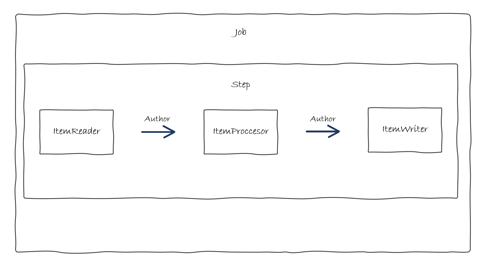

Autor - Spring Batch
Ya tenemos todo configurado del paso anterior asi que proseguimos con el siguiente ejemplo.
Caso de Uso
En este caso también debemos plantear requisitos diferentes para la parte de Autores.
¿Qué vamos a hacer?
Vamos a implementar un batch para leer un fichero de Autores trasformar la nacionalidad del autor a código de region y general un fichero con los datos trasformados.
¿Cómo lo vamos a hacer?
Al igual que en el caso anterior seguiremos el esquema de funcionamiento habitual de un proceso batch que hemos visto en la parte de introducción:

- ItemReader: Se va a leer de un fichero y convertir los registros leídos al modelo de
Author. - ItemProcessor: Va a procesar todos los registros convirtiendo el código de nacionalidad al formato xx_XX.
- ItemWriter: Va a escribir los registros en un fichero.
- Step: El paso que contiene los elementos que van a realizar la funcionalidad.
- Job: La tarea que contiene los pasos definidos.
Código
Modelo
En primer lugar, vamos a crear el modelo dentro del package com.ccsw.tutorialbatch.model de la misma forma que en el ejemplo anterior.
package com.ccsw.tutorialbatch.model;
public class Author {
private String name;
private String nationality;
public Author() {
}
public Author(String name, String nationality) {
this.name = name;
this.nationality = nationality;
}
public String getName() {
return name;
}
public void setName(String name) {
this.name = name;
}
public String getNationality() {
return nationality;
}
public void setNationality(String nationality) {
this.nationality = nationality;
}
@Override
public String toString() {
return "Author [name=" + getName() + ", nationality=" + getNationality() + "]";
}
}
Reader
Ahora, como en el caso anterior, emplazamos él Reader en la clase donde posteriormente añadiremos la configuración junto al resto de beans, dentro del package com.ccsw.tutorialbatch.config.
package com.ccsw.tutorialbatch.config;
...
@Configuration
public class AuthorBatchConfiguration {
@Bean
public ItemReader<Author> readerAuthor() {
return new FlatFileItemReaderBuilder<Author>().name("authorItemReader")
.resource(new ClassPathResource("author-list.csv"))
.delimited()
.names(new String[] { "name", "nationality" })
.fieldSetMapper(new BeanWrapperFieldSetMapper<>() {{
setTargetType(Author.class);
}})
.build();
}
Para la ingesta de datos vamos a hacer uso de este FlatFileItemReader que nos proporciona Spring Batch. Como se puede observar se le proporciona el fichero a leer y el mapeo a la clase que deseamos. Aquí el catálogo de Readers que proporciona Spring Batch.
Processor
Posteriormente, emplazamos él Processor dentro del package com.ccsw.tutorialbatch.processor.
package com.ccsw.tutorialbatch.processor;
import com.ccsw.tutorialbatch.model.Author;
import org.slf4j.Logger;
import org.slf4j.LoggerFactory;
import org.springframework.batch.item.ItemProcessor;
public class AuthorItemProcessor implements ItemProcessor<Author, Author> {
private static final Logger LOGGER = LoggerFactory.getLogger(AuthorItemProcessor.class);
@Override
public Author process(final Author author) {
String name = author.getName();
String nationality = author.getNationality().toLowerCase() + "_" + author.getNationality().toUpperCase();
Author transformedAuthor = new Author(name, nationality);
LOGGER.info("Converting ( {} ) into ( {} )", author, transformedAuthor);
return transformedAuthor;
}
}
De la misma forma que en el caso anterior hemos implementado un Processor personalizado, esta clase implementa ItemProcessor donde especificamos de qué clase a qué clase se va a realizar la trasformación.
En nuestro caso, va a ser de Author a Author donde vamos a implementar la lógica requerida para este caso de uso.
Writer
Posteriormente, añadimos el writer a la clase de configuración AuthorBatchConfiguration donde ya habíamos añadido Reader.
package com.ccsw.tutorialbatch.config;
...
@Configuration
public class AuthorBatchConfiguration {
...
@Bean
public ItemWriter<Author> writerAuthor() {
return new FlatFileItemWriterBuilder<Author>().name("writerAuthor")
.resource(new FileSystemResource("target/test-outputs/author-output.txt"))
.lineAggregator(new PassThroughLineAggregator<>())
.build();
}
}
A diferencia del ejemplo anterior utilizamos FlatFileItemWriter diferente que en este caso nos ayuda a crear un fichero con los datos deseados. Aquí el catálogo de Writers que proporciona Spring Batch.
Step y Job
Ahora ya podemos añadir la configuración del Step y del Job dentro de la clase de configuración. La clase completa debería quedar de esta forma:
package com.ccsw.tutorialbatch.config;
import com.ccsw.tutorialbatch.model.Author;
import com.ccsw.tutorialbatch.processor.AuthorItemProcessor;
import org.springframework.batch.core.Job;
import org.springframework.batch.core.Step;
import org.springframework.batch.core.job.builder.JobBuilder;
import org.springframework.batch.core.launch.support.RunIdIncrementer;
import org.springframework.batch.core.repository.JobRepository;
import org.springframework.batch.core.step.builder.StepBuilder;
import org.springframework.batch.item.ItemProcessor;
import org.springframework.batch.item.ItemReader;
import org.springframework.batch.item.ItemWriter;
import org.springframework.batch.item.file.FlatFileItemReader;
import org.springframework.batch.item.file.FlatFileItemWriter;
import org.springframework.batch.item.file.builder.FlatFileItemReaderBuilder;
import org.springframework.batch.item.file.builder.FlatFileItemWriterBuilder;
import org.springframework.batch.item.file.mapping.BeanWrapperFieldSetMapper;
import org.springframework.batch.item.file.transform.PassThroughLineAggregator;
import org.springframework.context.annotation.Bean;
import org.springframework.context.annotation.Configuration;
import org.springframework.core.io.ClassPathResource;
import org.springframework.core.io.FileSystemResource;
import org.springframework.transaction.PlatformTransactionManager;
@Configuration
public class AuthorBatchConfiguration {
@Bean
public ItemReader<Author> readerAuthor() {
return new FlatFileItemReaderBuilder<Author>().name("authorItemReader")
.resource(new ClassPathResource("author-list.csv"))
.delimited()
.names(new String[] { "name", "nationality" })
.fieldSetMapper(new BeanWrapperFieldSetMapper<>() {{
setTargetType(Author.class);
}})
.build();
}
@Bean
public ItemProcessor<Author, Author> processorAuthor() {
return new AuthorItemProcessor();
}
@Bean
public ItemWriter<Author> writerAuthor() {
return new FlatFileItemWriterBuilder<Author>().name("writerAuthor")
.resource(new FileSystemResource("target/test-outputs/author-output.txt"))
.lineAggregator(new PassThroughLineAggregator<>())
.build();
}
@Bean
public Step step1Author(JobRepository jobRepository, PlatformTransactionManager transactionManager, ItemReader<Author> readerAuthor, ItemProcessor<Author, Author> processorAuthor, ItemWriter<Author> writerAuthor) {
return new StepBuilder("step1Author", jobRepository)
.<Author, Author> chunk(10, transactionManager)
.reader(readerAuthor)
.processor(processorAuthor)
.writer(writerAuthor)
.build();
}
@Bean
public Job jobAuthor(JobRepository jobRepository, Step step1Author) {
return new JobBuilder("jobAuthor", jobRepository)
.incrementer(new RunIdIncrementer())
.flow(step1Author)
.end()
.build();
}
}
- ItemReader: El bean del
Readerque hemos creado anteriormente. - ItemProcessor: El bean del
Processorque hemos creado anteriormente. - ItemWriter: El bean del
Writerque hemos creado anteriormente. - Step: La creación del
Stepse realiza mediante élStepBuilderal que le definimos el tamaño delchunkque es el número de elementos procesados por lote y le asignamos los tres beans creados previamente. En este caso solo vamos a tener un únicoSteppero podríamos tener todos los que quisiéramos. - Job: Finalmente, debemos definir él
Jobque será lo que se ejecute al lanzar nuestro proceso. La creación se hace mediante el builder correspondiente como en el caso anterior. Se asigna el identificador deJob, el conjunto de steps, en este caso solo tenemos uno. En este caso no necesitamos un listener, ya que para verificar el resultado podemos ver el archivo generado.
Fichero Carga
Finalmente, debemos crear el fichero que leeremos con los datos de los autores que deseamos procesar.
Alan R. Moon,US
Vital Lacerda,PT
Simone Luciani,IT
Perepau Llistosella,ES
Michael Kiesling,DE
Phil Walker-Harding,US
Pruebas
Ahora ya tenemos dos Jobs en nuestro batch por lo que debemos especificar en el arranque cual queremos ejecutar.
Esto se realiza pasando una VM option en el arranque de la aplicación:
-Dspring.batch.job.name=jobAuthor
-Dspring.batch.job.name=jobCtegory
Hecho esto y ejecutado el batch, podremos ver la traza de la ejecución en nuestro log y el fichero generado en el target del proyecto:
Job: [FlowJob: [name=jobAuthor]] launched with the following parameters: [{'run.id':'{value=1, type=class java.lang.Long, identifying=true}'}]
Executing step: [step1Author]
Converting ( Author [name=Alan R. Moon, nationality=US] ) into ( Author [name=Alan R. Moon, nationality=us_US] )
Converting ( Author [name=Vital Lacerda, nationality=PT] ) into ( Author [name=Vital Lacerda, nationality=pt_PT] )
Converting ( Author [name=Simone Luciani, nationality=IT] ) into ( Author [name=Simone Luciani, nationality=it_IT] )
Converting ( Author [name=Perepau Llistosella, nationality=ES] ) into ( Author [name=Perepau Llistosella, nationality=es_ES] )
Converting ( Author [name=Michael Kiesling, nationality=DE] ) into ( Author [name=Michael Kiesling, nationality=de_DE] )
Converting ( Author [name=Phil Walker-Harding, nationality=US] ) into ( Author [name=Phil Walker-Harding, nationality=us_US] )
Step: [step1Author] executed in 50ms
Job: [FlowJob: [name=jobAuthor]] completed with the following parameters: [{'run.id':'{value=1, type=class java.lang.Long, identifying=true}'}] and the following status: [COMPLETED] in 67ms
Author [name=Alan R. Moon, nationality=us_US]
Author [name=Vital Lacerda, nationality=pt_PT]
Author [name=Simone Luciani, nationality=it_IT]
Author [name=Perepau Llistosella, nationality=es_ES]
Author [name=Michael Kiesling, nationality=de_DE]
Author [name=Phil Walker-Harding, nationality=us_US]